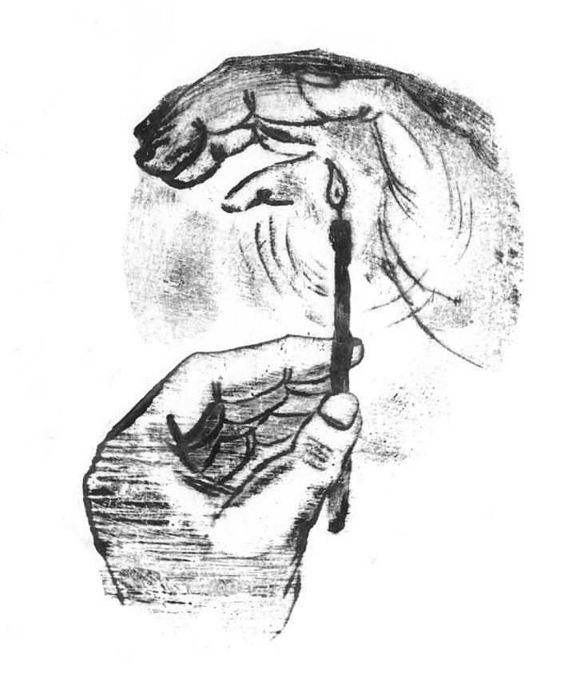
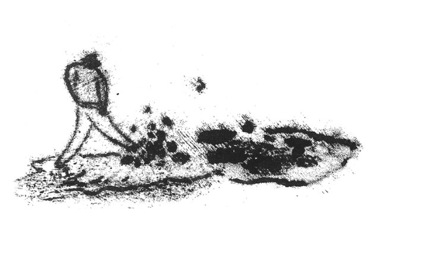
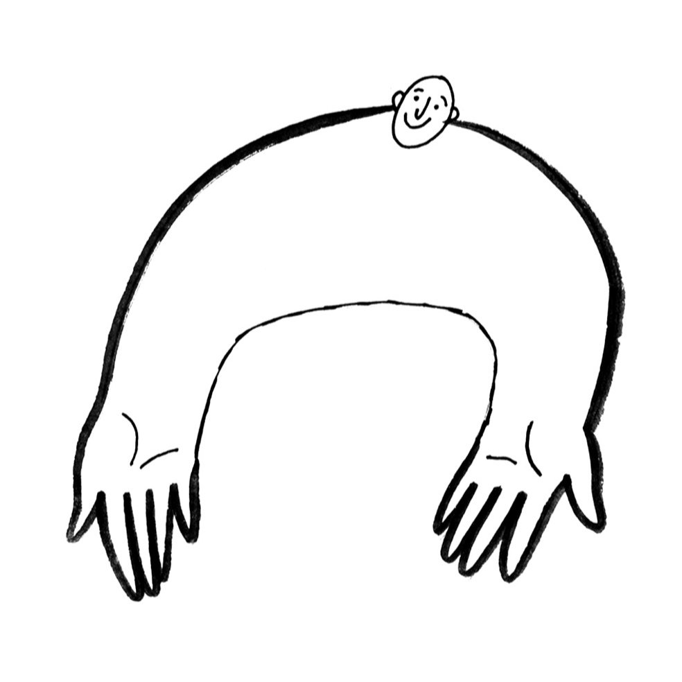
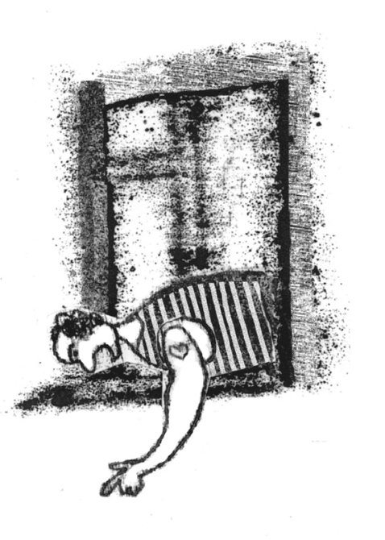
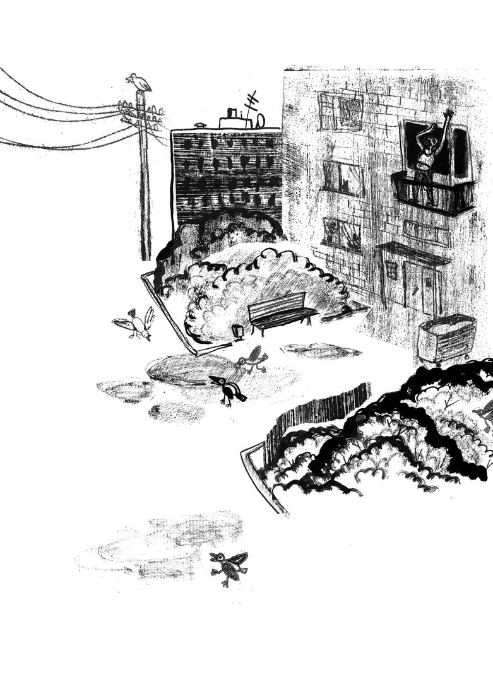
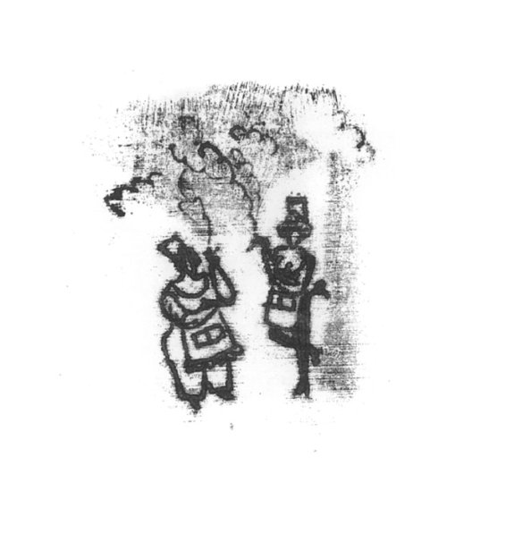
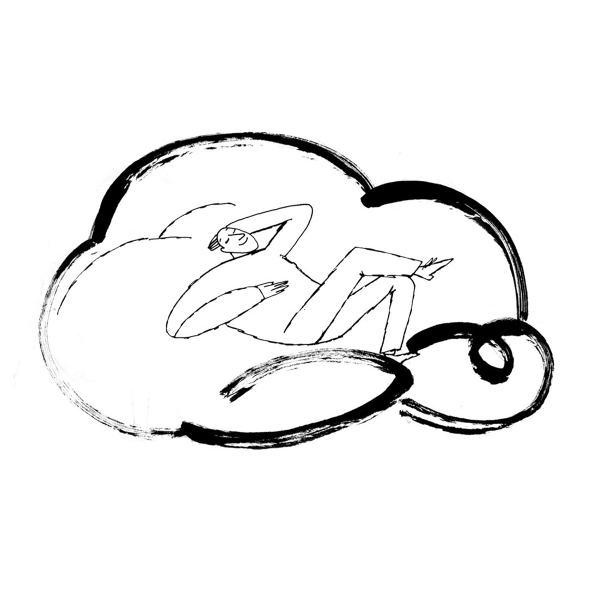

До того момента совершенно здоров был. Шел с рыбалки на автобусную остановку, поймал так, ерунду, пару подлещиков да густерку грамм на 150. Больше отдохнул, посидел у воды, не думая особо ни о чем, ну все, кто пробовал, знают. Дорога через поле шла, а поле злаками шелестело, жирными боками на предобеденном солнышке переливаясь.
Ну и вспомнил мужичок детство, и давай их жевать из баловства. А на зернах спорынья оказалась. Закрутило, завертело, понесло в пляску бешеную мужичка у автостанции. Люди сперва подумали, что наркоман, возмутились. А потом видят: не очень мужичку-то, пожалели да скорую поскорей вызвали. А молодежь все больше снимала.
Пока мужичка в больничке откачивали, из реанимации в реанимацию катали, танец его в тиктаке завирусился. Вышел он, а уже всемирная знаменитость. Ну, почти. Бренды начали писать, блогеры с коллабами какими-то приставать, подростки на улицах узнавать.
Не понравилось это мужичку, ярмарка какая-то, кто громче выпендрится. Уехал он в Астрахань на рыбалку на неделю, подальше от странных людей и злаков. А вернулся, все уж и забыли давно. Там коза трехрогая теперь бабки одной из-под Улан-Удэ в топе третий день, Урсулой зовут.
02
Один мужичок воспитывал ребенка.

Точнее, ну как воспитывал. Жил себе, поглядывал, жена там что-то шуршала, и все вроде бы гладко шло, пока однажды не произошел вопиющий проступок. Такого мужичок вытерпеть не смог и вмиг понял, что нужны меры. Чтобы такого не повторилось никогда нужно сделать то, что повторялось всегда и так тому и быть. Потому что ничего другого у него в голове не было.
Достал с балкона старый ремень, размочил его в горячей воде, вызвал ребенка, уложил на колени и собрался было пороть. Тут на него пустым ведром по голове вдруг упало что-то из детства ошеломляющее. И остановился мужичок. Не могу, говорит. А делать-то что.
Ребенок чуть бояться перестал и говорит: может, обнимешь меня. Обнялись они, а мужичок нюни распустил как баба и говорит, что испугался, что ребенок станет плохим, да нет, уже стал, и решил этот страх прогнать. То есть, меня избить, поправил ребенок. Так перестала клеиться картина.
Иди, говорит, мужичок, мне подумать надо. Ну и прости что ли, хотя вроде проступок не я совершил. А сам задумался, надо же какие дети пошли, неужели не только говном их с ложечки в интернетах кормят.
А на облаке так и записали: молодец мужичок, услышал, что должен был. Там вообще внимательные сидят, все записывают, покруче видеокамер.
03
Один мужичок очень сильно увлекся технологиями.
Раньше он просто бухгалтер был, жил приемлемо и без особых притязаний. Жена заботливая, дети выросли, старший жениться собрался, обои переклеил на кухне по весне. Жизнь как жизнь.
А началось всё с малого, как это всегда бывает. Сначала Танки попробовал, первый бесплатно дали, потом ВПН стал включать, а там уже и до телеграмм-каналов рукой подать — ну и оказался, сам того не заметив, ИИ-нейтив.
Сперва дома не замечали. Ну сидит что-то, буковки перебирает, может дебет с кредитом сводит. А что глаза возбужденно горят — так поди климакс. У мужчин тоже бывает.
Жена, как узнала, поверить не могла. Сперва как-то уговорить пыталась: откажись, мол, ради семьи. А этот компанию себе собрал агентов, и чаи с ними гоняет, «вайбкодит» по-ихнему. Ну совсем как дурачок. Потом скандалы начались, особенно когда мужичок из дома вещи стал таскать. Отнесет на почту старые книги — это для обучения, мол, а сам нанубанану себе какую-то покупает и играет с картинками, как у Светки сын джокер-покер днями и ночами гонял, пока не сел за долги.
Ну и не выдержала жена, конечно. Это было в тот день, когда ОПЕН-ИИ новый релиз выпустили. Выставила вещи к порогу и говорит: — Пока не бросишь — АГИ тут твоей чтобы больше не было.
Что поделаешь, пошел мужичок на улице жить. Ночлежку себе какую-то соорудил. Проект, конечно, ИИ нарисовал. Днем сядет у перехода, сделает песенку в музыкальной нейросети, перед собой коробку из-под видеокарты поставит, и собирает мИИлостыню. А иной раз сгенерирует чудика какого на планшете и детишек в парке развлекает за копеечку. Что послопает, как говорится, то и полопает.
А как-то, свидетели говорили, подошел к мужичку другой, в строгом костюме, плаще дорогом, визитку какую-то протянул. Минут 20 они общались, да и ушли куда-то вместе.
С тех пор мужичка не видели. Одни распускали, что его в Яндекс на опыты забрали, другие спорили, что это, мол, сын после армии в Контору пошел, и батю к себе забрал.
Не узнать теперь. Одно точно: неоднозначная это штука, искусственный интеллект.
04
Один мужичок доброе дело сделал, даже не сам, просто практически случайно помешал другим сделать недоброе.
Пару свидетелей даже похвалили его, не перевелись, говорят, мужички в русских селениях, и всякую такую отдали честь.
А мужичок вроде и рад, а испугался до паралича. А ну как злыдни найдут его, да припомнят, что не дал им дело недоброе совершить мужичок. У них-то план небось был, не как он, случайно практически пресек его. А когда есть план, то и неудача больнее видится, как что-то законное практически отняли, даже если и план был незаконным. Законы — они же разные бывают.
Так и сидел мужичок дома, носа не высовывая, изредка доставку в Пятерке заказывая — не слишком богат был — да сам не принимал, все просил у двери оставить, и следил, пока уйдет курьер.
Свидетели событие забыли через пару минут, злыдни через пару часов максимум, остальным, вроде соседей, и в голову бы не пришло, что мужичок напуган и скрывается — он и так тихий был, тише асмр, ниже Дэнни де Вито. Да и сам мужичок, через месяц или два, тоже, конечно забыл, и поймал себя на том, что посвистывая в магазин идет.
Все стерлось. А доброе дело осталось. Его на небе сразу в нужную папку подшили.
05
Один мужичок очень хотел на концерт Канье Веста в Санкт-Петербурге.

Билет купил хороший, бандану, штаны постирал — и ждал.
А потом началась вся эта свистопляска. Напрягся мужичок, ночей не спал, все новости вычитывал: будет или не будет? Кто сильней — рука рынка или воля бояр?
Встала жизнь, не ест, не пьет мужичок, только встанет с утра, тюль не открывая, в окно глядит и грустно под нос напевает: «I know it's past visiting hours, but can I please give her these flowers?».
А всем весело. Мемы делают, шутки шутят, ставки ставят, скульптурки из папье-маше ради кураторских лайков и вирусных фото лепят. А вот скажите, разве ж можно так с человеком, даже если он всего один, ни на что повлиять не способный, зато сердце в груди разрывается? Но всем плевать.
Расстроился тогда мужичок, открыл полимаркет и зарядил хату на то, что — нет, гори оно пропадом — не приедет Канье Вест в Петербург. Упал на топчан и расплакался. Так и рыдал, пока не умер и не оказался у боженьки в теплых объятиях, такой нужный и не брошенный. А на полу остался лежать билет.
Лос-Анджелес - Москва, с пересадкой в Стамбуле. Мужичка звали Канье, по фамилии Вест.
06
Один мужичок очень любил свою козу.
Известно, о чем вы подумали, это вас интернет навсегда испортил. Он любил свою козу, которая из пальцев. Та всегда получалась мощная, волевая — козырная. Для самых дотошных, а я знаю, такие есть среди моих читателей, сообщу: жила коза на правой руке.
Так он ее любил, что постоянно любовался в свободное от забот время, наряды ей покупал и изобретал. Особенно коза любила черные кожаные перчатки без пальцев с небольшими шипами. Время такое было: разруха, застой. Общечеловеческий панк был на полном ходу, чем коза хуже.
Поэтому всю юность мужичок провел на концертах. Там козе можно было вдоволь побеситься. Он так это и называл: выгулять козу. При этом, сам мужичок ни рок, ни панк, ни тем более металл не любил. От металла у него даже случалась пароксизмальная сенсорная парасомния, штука хоть и не опасная, но очень неприятная. Единственная группа, которую мужичок любил за треш и угар — Коррозия Металла. Есть даже известная фотография в интернете, где стоит Сергей "Паук" Троицкий со своей элегантной, утонченной козочкой, и мужичок. Со своей, козырной.
Потом мужичок вырос сам, детей вырастил, не до концертов уже было. Любили они с козой новых русских подразнить за скромным праздничным столом. Детишек развлекали: идет коза рогатая за малыми ребятами, за теткой хамоватою, за русскими солдатами, за ледоколом атомным, за фабрикой отжатою, за сочными купатами, за фурой с стекловатою, за толстыми депутатами, за жадными адвокатами, за высшими наградами — забодаю забодаю забодаю.
Добрый был мужичок, и коза у него была добрая, ручная и неагрессивная, несмотря на перчатки все эти в юности, пару кривых татуировок и перебитый об одного козла правый рог.
Подряхлели оба, конечно, со временем. Теперь мужичок, дед уже, козу дальше двора не выгуливал. Старый, седой, в бороде колтун вроде косички. На БГ чем-то похож, только не такой долбоеб. Сидит на скамейке: левая рука на клюке, а правой местных детишек козой развлекает. Любили они его. Да что они — у меня это во дворе было.
А потом не стало их, обоих. Как всего однажды не становится. Мы вышли во двор после школы, а мужичок не вышел. И коза не вышла — в один день они нас оставили без присмотра. Так их вместе и положили.
Вот такая, ребят, дружба. На всю жизнь.
07
Один мужичок очень любил путешествовать.

Но так как богатым наследством его обделили, ибо откуда богатое наследство в семье потомственных крестьян-погорельцев, а лени — наоборот — двенадцать с половиной кубов в гостиной стояло, то путешествовал он в уме. Ложился на диван и отправлялся, куда глаза глядят.
И ведь интересно было. Постоянно что-нибудь приключалось, происходили неожиданности и передряги, а заканчивалось все хэппи-эндом. То штамп австралийский пограничник не туда поставит, бегаешь потом от кенгуру и до консульства. То стрипчуху какую в нигерийских джунглях подхватишь и шарахаешься по подсознанию похлеще, чем под этой вашей айваской. То эскимосы убить задумают и ходят вокруг чума с ятаганами, а ты сидишь и ждешь, не то пока вождь команду заходить даст, не то участковый на снегоходе с ржавым карамультуком приедет и спасет.
Интересный человек был, столько всего повидал. На любую тему разговор мог поддержать. От строительства модулей в Антарктиде до ассортимента магазинчика в самом конце Гроссглокнера. От разнузданного секса в слипер-басах до наглых харонов на Ориноко.
А был — потому что однажды рептилоиды из гугла изобрели прогулки по картам, и мужичок, попробовав раз, не смог отказаться. Потом ютуберы изобрели молчаливые прогулки по городам, от Токио до Кашкаиша. За ними и метаверсеры подоспели со своими кубиками. Все, чтобы в человеке творческое начало убить.
И убили. Не наповал, конечно, но душа у мужичка 300, а сам сидит и смотрит в одну точку часами. Выхода новых лыжных очков ждет. Экспириенс получить. Иммерсивный. В гостиной помимо лени теперь два паллета тоски стоит, а в приходно-гормональной ведомости сплошной недочет по нейромедиаторам.
Здесь должна быть мораль какая-то. Но какая мораль у бизнесменов. У них только одна мораль: деньги. Денег у мужичка не было, так как богатым наследством его обделили, поэтому забрали жизнь.
Конец.
08
Один мужичок очень хотел быть полезным.

И стал он вести полезную жизнь. Ел полезную еду, делал полезные упражнения, давал только полезные советы, избегал бесполезных действий и людей. За долгие годы полезной жизни принес мужичок немало пользы людям. Все ему были очень благодарны и старались всячески угодить. В чем он также видел для людей изрядную пользу, поэтому от благ не отказывался, а аккуратно складывал их в доме, а что-то раздавал дальше.
Пришло время мужичку. Все полезное про жизнь он передал, всех родных и близких отпустил, и лег помирать. А за 5 минут до смерти смог он вывести 5 простых правил, как с максимальной пользой завершить жизненный путь. Но записать или рассказать не успел. Так и умер, немного вдохновленный и немного опечаленный.
Как все, в общем.
09
Один мужичок попал в неведомую страну.
В качестве туриста. Вышел утром из гостевого дома на прогулку. Смотрит, а у каждого двора мужичок позолоченный стоит, маленький такой, но строгий. Цветочками посыпан, зернышки лежат, ягодки. Спросил он у прохожего через онлайн-переводчик: в честь чего у каждого дома такое? А прохожий ему говорит:
— Это наше Малое божество, Мужичок Который Держит Дом. У нас так принято: хозяин за дом стоит, домашние за него. А это подношения Мужичку от хозяина. Он МКДД всё, и МКДД всё ему.
Пошел мужичок дальше. Видит: на каждом перекрестке по небольшому мужичку стоит. Размером с двух карликовых пуделей, руки в карманах. У ног фрукты лежат, бутылочки цветными этикетками. Спросил он у прохожего через онлайн-переводчик: а это что за божество? Тот ему отвечает:
— Это наше Небольшое божество, Мужичок Который Держит Район. У нас так принято: жители за район стоят, район за них. А это подношения Мужичку от района. Район МКДР всё, и МКДР всё ему.
Гулял мужичок два часа по городку. В лавке сувениров прихватил: магнитик в виде сланца, с дельфинами и названием города, сбор травяной с местных гор, пей-не-скучай. Пообедал, сфотографировался, ноги в водоеме намочил. Видит: на въезде в городок большой мужичок стоит. Метра три ростом. Спокойный и с животиком. Золотом блестит, аж глаза слепит. У ног шкуры полосатые лежат, другие штуковины какие-то. Спросил он у прохожего через онлайн-переводчик: а это что за божество? Тот ему отвечает:
— Это наше Большое божество, Мужичок Который Держит Городок. У нас так принято: жители за городок стоят, городок за них. А это подношения Мужичку от городка. Городок МКДГ всё, и МКДГ всё ему.
Пошел дальше наш мужичок. Завернул за угол, глядит: а на горе огромный золотой Мужик стоит. Лицо спокойное, как у Будды, только большие уши, все в серьгах, а серьги все в бриллиантах размером с кулак. А у ног автомобили стоят, прицепы с дынями. Спросил он у прохожего через онлайн-переводчик: а это что за божество? Тот ему отвечает:
— Это наше Главное божество, Мужик Который Внимательно Слушает Сны Жены Улыбается Не Перебивает И Не Сваливает С Кухни. У нас так принято: жены мужичкам сны каждое утро рассказывают, а мужички стараются внимательно слушать и улыбаться. МКВССЖНПИНССК — Тот У Кого Получается.
В этот момент мужичок проснулся у себя в постели, во вполне ведомой стране, понятном городе, известном Бирюлево. Вышел на кухню и давай жене первым делом свой сон рассказывать. А та и не слушает: уткнулась в телефон и сториз листает. Хотя, конечно, сказала, что все слышит и понимает.
Расстроился мужичок, а потом передумал. Потому что нет такого правила нигде, чтобы женщины мужские сны должны были слушать.
10
Один мужичок так сильно хотел, чтобы его полюбили, что сам не заметил, как стал всех вокруг так же сильно ненавидеть.

В интернете на каждый контент свое мнение имел. И мнение это ненавидело самого автора, его мысль и выводы. Но никогда ни одного комментария мужичок не написал. Так сильно ненавидел.
Настолько сильно, что и в жизни говорить толком не мог. В голове звучали тирады, по сокрушительности сравнимые с падающим на свалку машин башенным краном. А снаружи слышно было только напряженное похрустывание губ и дребезжание зубов.
Редкие слова прорывались из его гневного сопла только в самые отвратительные моменты жизни. И те — в виде рубленого бормотства. — Ннд, — только и мог он выдавить кассиру Пятерочки на вопрос о пакете, отводя в сторону глаза. Чтобы не убить, конечно же.
Люди его, конечно же, сторонились. Убить он никого не мог, слишком замкнут был. Зато воняло от человека. Но не запахом — тот еще педант был наш мужичок — минус вайбом на сто квадратных метров все заражалось.
А однажды в трамвае рядом с ним оказалась странная женщина. Мужичок ее сразу же заметил и возненавидел. Аж губы зашевелились. Та его тоже заметила. И полюбила. Я же говорю: странная была.
Привиделось ей, что не гневом у мужичка губы поплевывают, а песенку веселую напевают. Напряжен не вспоглощающей ненавистью, а задор еле сдерживает, чтобы прямо тут не затанцевать. И щеки у него не серые и впалые — а румяные и с ямочками.
Так и пошла за ним, как заколдованная, отлипнуть не смогла. Дошла до квартиры, вошла за ним, а мужичок так сильно всё это ненавидел, что даже и сказать ничего не смог. Так там навсегда и осталась. Прибираться стала, готовить что-то, цветочки принесла откуда-то в начале марта.
Потому что боженька нас всех, дураков, любит. И для каждого у него припасен подарочек. Надо только сильно захотеть.
П.с. Соседи потом промеж себя говорили, что как будто и не такой противный стал мужичок-то. Но вы ему это не говорите, если повстречаете. Чтобы не вспугнуть нечаянно.
11
Один мужичок ненавидел зло.
Никак не мог понять, зачем оно нужно на земле, и почему бы его полностью не искоренить. Весь ютуб посмотрел, а ответа для себя так и не нашел.
Однажды увидел объявление: в город приезжает великий мудрец. Готов ответить на любые вопросы с полным для вас удовлетворением. Отпросился мужичок с работы до обеда и записался на прием.
Приходит, присаживается. Задает вопрос. Мудрец достает шахматную доску, расставляет простенький гамбитик или как там их. Смотит на мужичка. Мужичок – на мудреца. Тот берет белую пешку, добрую, и ест черную.
— Понял? — Спрашивает мудрец. — Хм, пока нет. — Отвечает мужичок.
Тогда мудрец берет черного коня и подло из-за угла ест белую пешку.
— Понял? — Спрашивает. — Хм, что-то, кажется, но, хм, пока не совсем, — задумчиво отвечает мужичок.
Мудрец берет белого слона, и тот, расталкивая плечами прохожих, со всего размаху выносит черного коня.
— А теперь понял? — Спрашивает мудрец. Мужичок постеснялся дураком показаться, с третьего раза человека мудрого не понять, и ответил: — Понял. — Ну вот. Иди.
Оделся мужичок, вышел на улицу, взволнованный и благодарный за новый опыт. Всю дорогу до офиса осознавал, что на самом деле мало, что понял по итогу. А около столовой, где уже весь отдел собрался ложками над лагманом греметь, обнаружил, что мудрец у него кошелек дернул, когда обнимал на прощание.
Тогда-то мужичок и понял. Всю примитивность своего линейного взгляда на жизнь и эти загогулины на плоскости тоже понял. И про зло понял: морду за такое надо бить.
12
Один мужичок испытал странное наваждение.

Зашел в Магнит за моцареллой, а купил двадцать два килограмма замороженной мойвы. Когда наваждение сошло, так и не смог ни объяснить себе этот поступок, ни придумать, что с ней делать.
Я этого делать тоже не возьмусь. Что еще раз подтверждает, что не все в жизни поддается пониманию.
13
Один мужичок очень себя не ценил.

Поэтому постоянно все портил. Как назло, все, за что ни возьмется, получалось у него хорошо. Но он портил и это. Найдет красивую жену, а потом сделает так, что она от него уйдет. Да не просто так, а со скандалом. На работе, хоть и на хорошем счету, буквально производственный отличник, но постоянно на грани увольнения. За все другие провинности. Так плохо к себе мужичок относился.
Устал он от этого и решил: пойду на войну. Себя испортить задумал, окончательно. Ну, и пошел. Там и завертелось: дали ему однажды важное задание. А он его с одной стороны испортил, окончательно и бесповоротно. А с другой, врагу вообще все испортил. Наступление сорвал, живую силу погубил, снабжение пожег. Много дел натворил тогда. На медаль хватило.
Стал мужичок Героем. Сам президент в красивом зале руку под камерами пожал. По телевизору показали, по интернету. Мамка плачет, жена уже и не рада, что сбежала — всей страной мужичка третий день славят.
А тот сел на кухне, горькой плеснул на два пальчика, и медаль геройскую подальше с глаз долой на полку за альманахи Бурда Моден запихнул. Потому что если он, урод такой, герой оказался, что ему президент руку жмет — то как ему нормальным людям теперь в глаза смотреть?
Так и сидел три дня, грустил. Потом скучно стало и пошел он дальше все вокруг портить. За что ему от нас письменная благодарность.
14
Один мужичок спустился к мусоропроводу перед работой.
Увидел на полу магнитик и кусок синей изоленты. Он магнитик на палец положил и изолентой примотал. Весь день на работе скрепки по столу гонял и был счастлив. А в столовой вилкой дирижировал выдуманному оркестру. Потому что дорабатывал последние 11 дней перед увольнением, скучать не любил, а действовать в собственных интересах пока так и не научился.